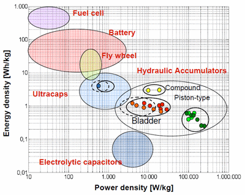

Being very happy with Robins Mk2 diverter doing it's job providing me with hot water I have come to realize that during the summer months it had done its job by 11.00am. From then on I'm supplying the grid with cheep, almost free electricity.
This is not on. Considering what I have to pay in the evening to import the stuff, so for the past few weeks I've been looking at energy storage systems. It seems on mainland Europe particularly Germany they are becoming commonplace. All the papers written seem to be circa 2011 and before. I assume then that the research had been done and production is in full swing.
There are two main storage battery systems lead acid and Li-ion, the latter are more efferent and are coming down in price due to their use in the automotive industry.
There are two general technologies, one charging batteries from the DC side the other from the AC, the latter seems to be the most popular as its easier to combine into an existing system.
I will provide a number of links that are from commercial sources so they can be discussed.
http://www.sma.de/en/products/battery-inverters/sunny-island-60h.html
http://www.voltwerk.com/solar-power-day-night/storage-solutions/vs-5-hyb...
http://www.solarresource.co.uk/solarbatterystorage.htm
http://www.brightgreenenergy.co.uk/energy-storage-for-grid-connected-sol...
http://www.saftbatteries.com/Produit_High_energy_lithium_ion_module_for_...
These are just a few of the sites I've found and product prices range from three to four thousand pounds to eighteen thousand pounds, I would sat £3500 to £5000 would be financially viable.
Enjoy and discuss. Rich.
Re: How about energy storage?
Have you seen this?
Re: How about energy storage?
I guess the key point in this is your statement:
This is not on. Considering what I have to pay in the evening to import the stuff.
Lets suppose that you have reduced your evening background load by using energy efficient lighting etc and maybe you are left with about 600W assuming maybe a big telly and a computer. Your evening cost will be about 9p per hour so for four hours an evening that is about £130 per year.
The cost recovery time for a £5000 system is about 38 years with all year sunshine. More like 80 years in reality and that does not include component replacement.
Re: How about energy storage?
Fair comment Brian, personaly I'm able to run the big energy stuff when i want to, but how about the working family who want the washing started before the school run, its all about the availability of energy when you want it with batteries you got it when you want. and I have a very big telly etc and the missus insists on putting the dish washer on "when its full"
This is a discussion topic so all comments welcome, the best laugh I had was a system costing £15000.
I like the Jeelabs site will have another look. This is the stuff I'm looking for to stimulate discussion
Re: How about energy storage?
Just some info about the price of a battery storage system:
The purchase price for a LiFeYPO4 battery is roughly €1/Ah per cell at the moment. At 3.2V nominal cell voltage this gives €1/3.2Wh. To achieve a reasonable number of discharge cycles and lifetime (5000 cycles, 20 years), the depth of discharge has to be kept to ~75%. That's €1/2.4Wh or €1000/2.4kWh.
A reasonably sized 96V 60Ah battery (30 cells) can deliver ~4.3kWh and costs ~€1800 (purchase price!). This is only the battery. Every cell has to be monitored and balanced. The electronics needed will amount to an additional ~€10/cell.
This means that the battery price for the end customer will be at least €3000 (margins, warranty costs,....).
But this is still only the battery. You need an additional charger (AC/DC or DC/DC) with a reasonable power to charge the battery in 2-3 hours, control logic and an inverter.
Re: How about energy storage?
I don't think batteries are a viable solution until the cost per cycle significantly reduces. A typical quality battery pack might cost £1000 per kWh and achieve 5000 cycles, so the cycle cost is around 20p per kWh excluding the cost of the electricity. i.e. more expensive than most fossil fuels. Using cheaper cells doesn't typically help as the depth of discharge and number of cycles also reduces.
Unfortunately the manufacturing cost of large capacity battery solutions has not reduced at the rate anticipated, partly because of the state of the economy and also the slow uptake of electric / hybrid vehicles.
An alternative for vehicles is an Hydraulic Hybrid, where energy is stored as pressurised fluid / gas in an accumulator, a hydraulic pump / motors convert the potential energy to kinetic and vis versa. This technology offers significantly lower cost, mass, embodied CO2 and has a greater power density than batteries. see graph.
Unfortunately it has a lower energy density so has its limitations. Typically a system could capture 75% of the regenerative braking and re-use it for launch assist. The rate of charge / discharge and number of cycles are not limiting factors in the way batteries are. This is not new technology and production examples include refuse trucks, agricultural sprayers, fork lift trucks etc. There have also been many car / van prototypes developed, some with my input.
For a home energy store the system would be complicated by the need to convert electrical to kinetic to potential energy. Efficiency, noise and space would all be issues, but non-the-less worthy of investigation as a potential cheaper / greener solution than batteries.

Re: How about energy storage?
I have an battery backed solar power system here in the USA, but that is apparently not a standard design in the area. It was purchased by the home's previous owner, so I am not sure what inspired him to go this path. The batteries are only used to provide emergency power during a power outage, not as a method to store power for later use. New York State here in the U.S. is a net-metering state, meaning that the power company is required to buy back my excess power at the same rate I buy from them (about $0.12/kWh). So there is no economic benefit for me to store or find other use (like heating the water) for extra generated power.
Our inverter has a few battery chargers / conditioners sitting on a bank of 8 large deep cycle lead acid batteries in a vented box in our basement. The DC from the solar feeds these first until they are fully charged. So, they sit fully charged 99.9% of the time. The inverter generates AC power for a subset of our house loads, the ones considered critical (kitchen, bathroom, and bedroom lights, refrigerator, bathroom and kitchen outlets, natural gas heating system). Extra power not consumed on these circuits then feeds the rest of the house, and then out to the neighborhood to sell back to the power company. So, in a power outage, the inverter automatically cuts off sending power out besides the subset of loads it has on a separate output. If it is sunny it powers that subload from solar, if not, from the batteries. So, this in effect turns my inverter into a large Uninterruptable Power Supply (UPS) for those critical circuits. During a sunny day it will charge back up the batteries which carry the circuits over the evening. In the 1 year we have lived here we only had one outage for about 1 minute, so I can't say how well it works beyond that. The previous owner indicated that it was rated to go for about 3 days but he has never had the need to run it past a few hours in the 6 years he owned it. No idea on the extra cost is ran him.
Little maintenance on the system, just need to top off the water in the batteries every 6 months or so. I know the batteries will need replacing at some point, but not sure when that will be.
Dan
Re: How about energy storage?
a bank of 8 large deep cycle lead acid batteries in a vented box in our basement
Dan, how are you preventing the risk of Hydrogen accumulating in your basement?
Re: How about energy storage?
Another interesting site -
http://www.victronenergy.com/
Re: How about energy storage?
As Dans system is for outage back up only and he only needs to top up every 6 months I would imagine the hydrogen output is very low, it could be calculated from the volume of the top up water as thats where the hydrogen comes from.
Re: How about energy storage?
At least the hydrogen won't form an explosive puddle on the basement floor! One hopes this was thought about at the time of installation and that there is adequate high level ventilation.
Re: How about energy storage?
The box has a PVC pipe that runs outside to vent any hydrogen. The whole setup was well designed by a local Solar PV company.
Re: How about energy storage?
There are two general technologies, one charging batteries from the DC side the other from the AC, the latter seems to be the most popular as its easier to combine into an existing system.
I have a mixture of both, but I'm thinking of changing the DC to AC. On a day like today my batteries have been at absorption stage since about 11 am and so I have not been getting the full potential output from the DC panels (3kw). The MPPT charge controller I have does seem very efficient and is good in winter. I could have used that lost output on the AC side when the sun had gone behind the clouds. With all these things there is so much planning to do and its certainly best not to rush into something.
Re: How about energy storage?
I know the batteries will need replacing at some point, but not sure when that will be.
There in lies one of the problems. You probably won't know, until you're an hour or two in to an extended outage. There's not much to indicate when a SLA battery is getting tired. Every fortnight or so, my UPS switches to batteries for a few minutes to test them. If it sees any significant voltage drop during that test, it declares them old and beeps until I replace them. 4-5 years seems to be about the limit for lead acid batteries (less if they see regular deep cycles).
Re: How about energy storage?
Tinbum, there is one definite advantage to charging on the AC side, if you are grid connected, the power goes through the generation meter therefore not affecting your fit.
What would be really good but probably illegal would be to charge on the AC side and discharge the batteries into the DC side, it would go through the meter twice then :-)
Re: How about energy storage?
Tinbum, there is one definite advantage to charging on the AC side, if you are grid connected, the power goes through the generation meter therefore not affecting your fit.
What would be really good but probably illegal would be to charge on the AC side and discharge the batteries into the DC side, it would go through the meter twice then :-)
At the moment I already have the maximum I would be allowed on my supply so that wasn't an option, but I am soon having it changed to a 3 phase supply so that will change. When I first got into solar all the inverters had to be connected to batteries hence my mixture. Things are changing so fast in this field its difficult to keep up!
Re: How about energy storage?
Whilst that would certainly be 'naughty', it does make best use of a single inverter allowing grid tied battery operation after sunset for background loads and assistance from the grid when fridges and other peak current devices need to start up and of course power if the batteries go flat.
A simple switch in the neutral to the generation meter would stop double counting by turning it off.
The only additional cost then would be batteries and some sort of charger.
Re: How about energy storage?
I used to average 37Kwh a day and now for the last 2 months I have averaged 3 units a day and that's with no oil, gas and the wood burner used twice.
Robins design has been absolutely brilliant and been used to charge the batteries, heat the DHW and run heaters in the house during the colder days. I just need to learn more about sketches to modify mine in readiness for the 3 phase supply.
Re: How about energy storage?
In the winter when there is little surplus solar you could charge your batteries overnight using Eco7. And then use to support the solar during the day when tariffs are higher.
Re: How about energy storage?
Tinbum: I just need to learn more about sketches to modify mine in readiness for the 3 phase supply.
That's been discussed elsewhere quite recently. Basically, you need 1 "bucket" with the three phases feeding it, and one dump load.
Re: How about energy storage?
Just out of curiosity - why not using a kind of compressed air reservoir attached to a compressor and pneumatic generator as a storage system instead of batteries?
Okay - the efficiency is not very high but at least it's a doable and not so adventurous and expensive like a system that generates H2 out of PV and store this for a while to burn it later (e.g. to power a steam cycle) or make electricity out of it with a fuel cell or the risks of a flywheel. Or maybe even using some stirling process to use the smaller temperature gradients or a ORC/Kalina cycle?
Anyone want to do the math, what energy, maybe 1 common scuba tank with 0,01 cubic meter volume at an overpressure of 20 MPa (200 Bar) to the 288,15 K warm environment, filled with a ideal gas like common air could hold if - lets say you can get an efficiency factor of 0.4 for electricity out of it (you can let the problems with the Joule Thomson effect and the heat generated at an adiabatic compression out of the picture as we say we can just store these heat to rewarm the decompressed air completely)?
Re: How about energy storage?
Tof,
This is effectively the system I describe above, with hydraulic accumulators storing energy.. You need an electric motor / generator a hydraulic pump / motor and two accumulators, one high pressure the other low.
Although bulkier in volume, it is cheaper and does not have the high embodied CO2 or limiting cycles of batteries.
I don't have the time at the moment, but am considering putting together a simulation and costing for a hydraulic home energy store.
Re: How about energy storage?
I have some military hydraulic accumulators that are used for generator engine starting in case of battery failure. I have tried starting a military generator using them but have the following observations
1. Using the hand pump to get them up to the required pressure for engine starting takes ages.
2. It physically wears you out, in fact I never got to the required pressure- I gave up.
3. The hydraulic starter motor only runs for a very very short time for all that effort.
Re: How about energy storage?
Well john.b,
I was more thinking about compressed air energy storage a pneumatic and not so much a hydraulic version - which could be possible too.
Re: How about energy storage?
Robert,
Thanks, i understand the principle I just lack the computing language knowledge. I was brought up with 'basic' computing and sinclair spectrums being start of art. I'm slowly getting there with 'c'.
Re: How about energy storage?
Tof, both pneumatic and hydraulic accumulators store energy by compressing a gas. In the hydraulic accumulators its usually an inert gas such a nitrogen and the presence of the oil and foam in the accumulator improves the thermodynamic efficiency. That was the basis of my comparison both store potential energy by compressing a gas.
Have a look here http://www.epa.gov/otaq/technology/research/research-hhvs.htm for hybrid vehicle applications
Re: How about energy storage?
Have read the EPA-page you gave me.
Well...
This concept works nice for regenerative braking. It is usually just useful to reduce fuel consumption and emissions for stop-and-go traffic.
The hydraulic accumulator won't run long - but he can produce lots of torque. So starting a (tank) motor with it and accelerate a car to some mph is possible.
I think you will lose a lot in the fluid resistance and as said it won't run long.
It would be much nicer if it could provide around 300 to 500 W for some hours eg. a sum of 5-10 kWh, maybe even just switched on for 15-20 mins and off again when needed by e.g. a fridge.
It could even be possible that using liquefied gas is much more useful than pressurized - but we do not have the problem of strictly limited volume as e.g. in a car and liquefied air needs some cryogenic help.
Re: How about energy storage?
"In the winter when there is little surplus solar you could charge your batteries overnight using Eco7. And then use to support the solar during the day when tariffs are higher."
Interesting thought, anyone know what the price ratio is? I'm with EDF and paying 12p ish per unit plus standing charge. It would be interesting to find out bearing in mind the effect of the batteries etc if their is any mileage in this one.
Re: How about energy storage?
I would go searching for flywheel designs like this.
The device shown can give 150kW for 8 seconds or 333W for a hour.
See : http://www.tunedtech.ca/how-porsche-created-a-real-life-electric-turbo-b...
Re: How about energy storage?
This is what I call fracking insane! - And I like it!
Re: How about energy storage?
Interesting thought, anyone know what the price ratio is? I'm with EDF and paying 12p ish per unit plus standing charge. It would be interesting to find out bearing in mind the effect of the batteries etc if their is any mileage in this one.
If storing one kWh costs ~€0.20 for a Li battery and something like €0.40..0.50 for a lead acid battery, there is not much room for a positive margin. Economically this is an absolute no-go.
Re: How about energy storage?
Maybe you should purchase one from these guys and give us a report on how well it works :)
Re: How about energy storage?
But if your already using batteries would it be worthwhile?
Interesting thought, anyone know what the price ratio is? I'm with EDF and paying 12p ish per unit plus standing charge.
Is it just me but i often see people say what they are paying per unit and it often seems much higher than I'm paying. I'm with OVO and paying slightly over 9p per unit with a 22p standing charge. That was fixed for a year till this August but even now its only just nearly 10p. They also offer 3% interest if your in credit!!! (no connection with company).
Re: How about energy storage?
The information on energy store benchmarking that I have is owned by the companies I've worked with, so I can't share. But fortunately one of them has some data on their website it's a bit old, but still of interest.
http://www.ricardo.com/en-GB/Our-Markets/Clean-Energy-and-Power-Generation/Energy-Storage-Systems/
Re: How about energy storage?
Ah, Ricardo. At least two of us here (possible more?) live very close-by.
P.
Re: How about energy storage?
Moved to the dark side in Norfolk :-)
Re: How about energy storage?
Brian D: Maybe you should purchase one from these guys and give us a report on how well it works :)
I bet that's beautifully made coming from a Formula 1 team.
It would have to be a massively scaled up version of the F1 KERS system to be any use in this application though. KERS has a maximum storage capacity of 400 kilojoules which is about 0.1kWh!
Re: How about energy storage?
Brian, I love the idea of a Formula 1 solar system with KERS!
Tinbum, you have 9p plus 22p I have 12p plus 17p I recon we probably pay the same per unit in the end, what do you pay for night/day tariffs?
If you have the batteries in place already and consider the cost written off then it could be worthwhile.
Re: How about energy storage?
The Williams flywheel system is not actually used in F1, they use battery / caps
Re: How about energy storage?
I'm not on economy 7 but at the 3 units a day I'm down to at the moment I'm 4p better off. Just joking. Now i have this solar I am going to look at the best type of tariff possible but I guess choice will be limited. Personally I'm not keen on this government interference in energy tariffs. These web sites make it easy to find the cheapest tarrifs. I'm hoping to get to the stage where I could actually be off grid, but be on grid just for the FIT payments.
Re: How about energy storage?
Here locally we have been talking about building a storage under the house that can store the energy for months to heat the house during the winter, a bit like using a heatpump to divert extra energy as heat to storage tank (saline) which can be pumped back to house as heat. On the other hand when I did the maths for my full energy consumption it was a surprise that one car (and we have 3) does take about the same amount of energy to to run as the house consumes per year, dont see much alternative than moving to electric cars at some point.
Re: How about energy storage?
The idea of storing surplus electrical energy only makes sense when no more energy can be used immediately. I am very aware how well my system does this but I have no idea how this compares with other peoples efforts.
If anyone else is interested in relative system performance I have created this spreadsheet which has read/write access so that anyone can add similar details for mutual benefit.
Feel free to change it if you wish.
Re: How about energy storage?
we have been talking about building a storage under the house that can store the energy for months to heat the house during the winter
Here at our local university, they have been putting on a few new buildings, solar evacuated tube heat absorbers of this style:
(Image from http://www.apricus.com)
They use it to heat hot water for the building, which is a small utility building that also has some showers for maintenance staff. During the summer the heat output is far higher than the needs for the hot water, so they end up dumping a lot of heat. The designer told me that when they built it, a section under the building was filled with several tons of sand, with pipes running through it. Come fall, when they still have excess heat capacity not used by the hot water heater from these, they start heating up the sand, which provides thermal mass for the building to reduce heating costs during the early winter. The heat is pulled into the building passively, the pipes only used to drive the extra heat into them.
Re: How about energy storage?
From a quick Google, it appears that the heat capacity of sand is about 1/5 that of water. I wonder why they did not use water for the storage medium?
Re: How about energy storage?
You can build on sand!
Re: How about energy storage?
Here is some more information on the building:
http://www.sustainablecampus.cornell.edu/initiatives/combined-heat-power...
Re: How about energy storage?
@ Petrik re having to move to electric vehicles.
Nissan will introduce a Home Smart Charging which uses the Leaf as a storage system that can power your house. So charge it during the day, and use it at night to power the house.
http://www.autocar.co.uk/car-news/nissan/nissan-leaf-%E2%80%98can-power-...
Given most of us drive a lot less than the range of the Leaf on an average day. I did say most. This would seem like the optimal solution. There is also a pilot on the island of Born in Denmark to use electric vehicles connected to the grid as a way of storing energy to supplement generation when renewables aren't generating enough. The idea was to make the island self sufficient in terms of energy.
Re: How about energy storage?
One could do this - but there are better and more (cost) efficient ways than using solar evacuated tube heat absorbers esp. for such a building
BTW: (Solar) Heating and warm water are often two different pair of shoes.
Re: How about energy storage?
"Nissan will introduce a Home Smart Charging which uses the Leaf as a storage system that can power your house. So charge it during the day, and use it at night to power the house."
Now theres a not very well thought out idea, use the power from the car at night fine, but how do you charge it from your solar when you use it to commute to and from work?
OK the ad says it will use the grid for power at night but that's cheap power not free.
Re: How about energy storage?
Now theres a not very well thought out idea.
The idea has some benefit. The UK 'plug in car grant' gives you £5000 incentive effectively covering the 20p per KWh cycle cost of batteries. You don't get a grant if you buy battery storage for your home; you should in my view but as I understand it it's not even on DECC's radar.
Perhaps you could convince your employer to install solar PV so you can charge your car at work. The FIT give them a clear business case for the investment.
Even if you used cheap night rate electricity there is still some benefit as it helps reduce peak demand and spinning reserve.
Re: How about energy storage?
If it wasn't so expensive in the first place it would be worth taking the £5000 and leaving it on the drive as a battery, after all it's only a nissan.
Re: How about energy storage?
after all it's only a nissan.
If it makes you feel better, you could leave an i3 on the drive :-)
Although electric vehicles are no panacea, today they could be financially beneficial with the grant. The grant amount is carefully worked out to stimulate electric vehicle adoption to a point where the cost reduces due to increased volume / new technologies etc.
The economics and practicality depend on your usage pattern.
If in addition you can find ways of making it more financially attractive by charging it for free from solar PV and / or reducing electricity input from the grid then all the better.
I think the real problem though is technical! Electric vehicle battery management systems are very complex and will not take kindly to being supplied with power by the kind of solar PV routers developed here. I think the vehicle BMS needs to be designed with this in mind and currently they are not.
Re: How about energy storage?
"If it makes you feel better, you could leave an i3 on the drive :-)"
Hmmmm a £35,000 battery! Hold on £35K for a city car I don't think so, I'll stick with my carbon fuel, polluting S2000 thanks.
Still the more research goes into car batteries the sooner Li ion's for domestic use will become viable, it just seems unfortunate that the raw material cost is so high.
Re: How about energy storage?
To be honest there is a long way to go before batteries are viable financially for home storage use if there are no grants. All the research I have seen suggests you are looking at 2020 before battery vehicles (ignoring grants) are comparable to diesel vehicles. Comparing the cost of diesel fuel at 14.7 p/KWh with imported electricity at 10 p/kWh for your home then clearly, you have longer to wait for financial viability for home battery storage.
I believe most of the cost reduction for batteries will come from improvements in process due to scale and that the raw material is not such an issue for technologies such as Li-poly.
Therefore, it is the increase in uptake of electric / hybrid vehicles that is critical to seeing a cost reduction; clearly, that is what the grant is intended to incentivise. A grant for home battery storage would be enormous beneficial, but sadly not on the horizon.
Might be worth putting in an e-petition for a Home Battery Storage Grant Framework. Any thoughts?
Re: How about energy storage?
Great info new to all this but been thinking for a while, a good few years ....
Just thought I'd share what my plans are... just got panels 1.6kw (already thinking of more :), found some DIN latch relays http://www.nortonicsfoxtam.co.uk/product/detail/Latching%20Relay/ to control via arduino or manual override between being powered from mains or large inverter no more that 3kw, also switch over 12/24V DC loads to powersupply/battery/DC-DC inverter etc, . Dump excess solar/wind to heat hot water, otherwise wood stoves for heating/DHW/cooking etc and keeping charged 400-600 Ah battery bank of Rolls batteries which are good for 2700 cycles @ DOD 50%. (so at 75% I guess at least 3500 ?) On days of low energy production (no wind/solar) i'd get arduino to switch power use secretly to mains and have it also charge batteries from mains using off peak prices over night. EDIT (Just came across an idea of connected power supply in place of solar panels, at night or if no sun, and house is powered of AC, to charge the batteries through the same charge controller. The smaller morning star MPPT charge controller states that you can do this, but I'm just asking if the larger 60A one can ? Would cut down cust, just need a 60A 24-48V power supply as backup charger.)
LED lighting I'm going to have dim automatically 2 hours after sunset gradually over an hour or so to encourage us to get to bed and wake early :) (found hight power PWM thing for this).
My basic thought is reduce energy needs 24V Led lighting throughout, and aim for off grid battery system (not too big and expensive) with backup from grid and workshop heavy machines mostly powered directly from grid (>3kw 3phase motors etc occasional use) And mostly get the family and myself connected more with out actual energy needs
I'm predicting that energy prices will only raise, and possible become unreliable or intermittent.
Ordered and waiting for my OpenEnergyMonitor kits so I can start building etc and getting a better idea of actually what I'm using.
Neil